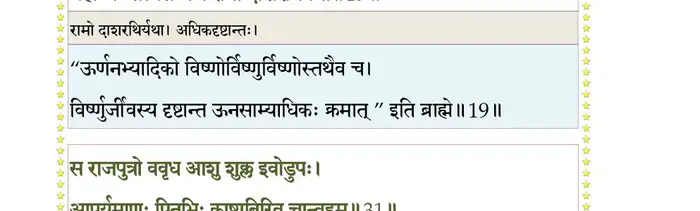
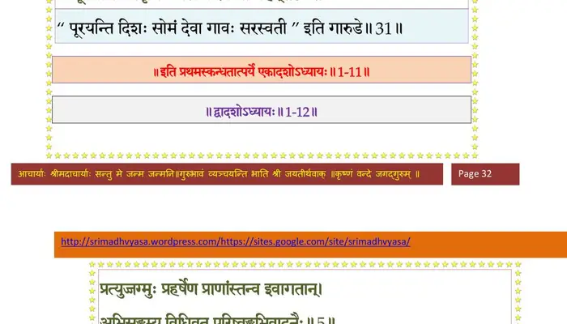

स्कन्ध 1 · अध्याय 11
श्लोक १
शौनक उवाच–
अश्वत्थाम्ना विसृष्टेन ब्रह्मशीर्ष्णोरुतेजसा ।
उत्तराया हतो गर्भ ईशेनोज्जीवितः पुनः।। १ ।।
अश्वत्थाम्ना विसृष्टेन ब्रह्मशीर्ष्णोरुतेजसा ।
उत्तराया हतो गर्भ ईशेनोज्जीवितः पुनः।। १ ।।
श्लोक २
तस्य जन्म महाबुद्धेः कर्माणि च गृणीहि नः ।
निधनञ्च यथैवासीत्स प्रेत्य गतवान्यथा।। २ ।।
निधनञ्च यथैवासीत्स प्रेत्य गतवान्यथा।। २ ।।
श्लोक ३
तदिदं श्रोतुमिच्छामि वक्तुं वा यदि मन्यसे ।
ब्रूहि नः श्रद्दधानानां यस्य ज्ञानमदाच्छुकः।। ३ ।।
ब्रूहि नः श्रद्दधानानां यस्य ज्ञानमदाच्छुकः।। ३ ।।
श्लोक ४
सूत उवाच–
अपीपलद्धर्मराजः पितृवद्रञ्जयन्प्रजाः ।
निस्पृहः सर्वकामेभ्यः कृष्णपादानुसेवया।। ४ ।।
अपीपलद्धर्मराजः पितृवद्रञ्जयन्प्रजाः ।
निस्पृहः सर्वकामेभ्यः कृष्णपादानुसेवया।। ४ ।।
श्लोक ५
सम्पदः क्रतवो विप्रा महिषी भ्रातरो मही ।
जम्बुद्वीपाधिपत्यञ्च यशश्च त्रिदिवं गतम्।। ५ ।।
जम्बुद्वीपाधिपत्यञ्च यशश्च त्रिदिवं गतम्।। ५ ।।
श्लोक ६
किन्ते कामातुरस्यार्थाः मुकुन्दमनसो द्विजाः ।
नाधिजह्रुर्मुदं राज्ञः क्षुधितस्य यथेतरे।। ६ ।।
नाधिजह्रुर्मुदं राज्ञः क्षुधितस्य यथेतरे।। ६ ।।
श्लोक ७
मातुर्गर्भगतो वीरः स तदा भृगुनन्दन ।
ददर्श पुरुषं कञ्चिद्दह्यमानोऽस्त्रतेजसा।। ७ ।।
ददर्श पुरुषं कञ्चिद्दह्यमानोऽस्त्रतेजसा।। ७ ।।
श्लोक ८
अङ्गुष्ठमात्रममलं स्फुरत्पुरटमौलिनम् ।
आपीच्यदर्शनं श्यामं तटिद्वाससमच्युतम्।। ८ ।।
आपीच्यदर्शनं श्यामं तटिद्वाससमच्युतम्।। ८ ।।
श्लोक ९
श्रीमद्दीर्घचतुर्बाहुं तप्तकाञ्चनकुण्डलम् ।
क्षतजाक्षं गदापाणिमात्मनः सर्वतोदिशम्।। ९ ।।
क्षतजाक्षं गदापाणिमात्मनः सर्वतोदिशम्।। ९ ।।
श्लोक १०
परिभ्रमन्तमुल्काभां भ्रामयन्तं गदां मुहुः ।
अस्त्रतेजः स्वगदया नीहारमिव गोपतिः ।
विधमन्तं सन्निकर्षे पर्यैक्षत क इत्यसौ।। १० ।।
अस्त्रतेजः स्वगदया नीहारमिव गोपतिः ।
विधमन्तं सन्निकर्षे पर्यैक्षत क इत्यसौ।। १० ।।
श्लोक ११
विधूय तदमेयात्मा भगवान् धर्मगुब्विभुः ।
मिषतो दशमा(स)स्यस्य तत्रैवान्तर्दधे हरिः।। ११ ।।
मिषतो दशमा(स)स्यस्य तत्रैवान्तर्दधे हरिः।। ११ ।।
श्लोक १२
ततः सर्वगुणोदर्के सानुकूलग्रहोदये ।
जज्ञे वंशधर; पाण्डोर्भूयः पाण्डुरिवौजसा।। १२ ।।
जज्ञे वंशधर; पाण्डोर्भूयः पाण्डुरिवौजसा।। १२ ।।
श्लोक १३
तस्य प्रीतमना राजा विप्रैर्धौम्यकृपादिभिः ।
जातकं कारयामास वाचयित्वा च मङ्गलम्।। १३ ।।
जातकं कारयामास वाचयित्वा च मङ्गलम्।। १३ ।।
श्लोक १४
हिरण्यं गां महीं ग्रामान्हस्त्यश्वान्नृपतिर्वरान् ।
प्रादात्स्वन्नञ्च विप्रेभ्यः प्रजातीर्थे स तीर्थवित्।। १४ ।।
प्रादात्स्वन्नञ्च विप्रेभ्यः प्रजातीर्थे स तीर्थवित्।। १४ ।।
श्लोक १५
तमूचुर्ब्राह्मणास्तुष्टा राजानं प्रश्रयानतम् ।
एष ह्यस्मिन्प्रजातन्तौ कुरूणां पौरवर्षभ।। १५ ।।
एष ह्यस्मिन्प्रजातन्तौ कुरूणां पौरवर्षभ।। १५ ।।
श्लोक १६
दैवेनाप्रतिघातेन कुले संस्थामुपेयुषि ।
रातो वोऽनुग्रहार्थाय विष्णुना प्रभविष्णुना।। १६ ।।
रातो वोऽनुग्रहार्थाय विष्णुना प्रभविष्णुना।। १६ ।।
श्लोक १७
तस्मान्नाम्ना विष्णुरात इति लोके बृहच्छ्रवाः ।
भविष्यति न सन्देहो महाभागवतो महान्।। १७ ।।
भविष्यति न सन्देहो महाभागवतो महान्।। १७ ।।
श्लोक १८
राजोवाच–
अप्येष वंश्यान्राजर्षीन्पुण्यश्लोकान्महात्मनः ।
अनुवर्तिता स्विद्यशसा साधुवादेन सत्तमाः।। १८ ।।
अप्येष वंश्यान्राजर्षीन्पुण्यश्लोकान्महात्मनः ।
अनुवर्तिता स्विद्यशसा साधुवादेन सत्तमाः।। १८ ।।
श्लोक १९
ब्राह्मणा ऊचुः–
पार्थ प्रजाविता साक्षादिक्ष्वाकुरिव मानवः ।
ब्रह्मण्यः सत्यसन्धश्च रामो दाशरर्थियथा।। १९ ।।
पार्थ प्रजाविता साक्षादिक्ष्वाकुरिव मानवः ।
ब्रह्मण्यः सत्यसन्धश्च रामो दाशरर्थियथा।। १९ ।।
भागवततात्पर्यनिर्णय

श्लोक २०
एष धाता शरण्यश्च यथा ह्यौशीनरः शिबिः ।
यशो वितनिता स्वानां दौष्यन्तिरिव यज्वनाम्।। २० ।।
यशो वितनिता स्वानां दौष्यन्तिरिव यज्वनाम्।। २० ।।
श्लोक २१
धन्विनामग्रणीरेषः तुल्यश्चार्जुनयोर्द्वयोः ।
हुताश इव दुर्धर्षः समुद्र इव दुस्तरः।। २१ ।।
हुताश इव दुर्धर्षः समुद्र इव दुस्तरः।। २१ ।।
श्लोक २२
मृगेन्द्र इव विक्रान्तो निषेव्यो हिमवानिव ।
तितिक्षुर्वसुधेवासौ सहिष्णुः पितराविव।। २२ ।।
तितिक्षुर्वसुधेवासौ सहिष्णुः पितराविव।। २२ ।।
श्लोक २३
पितामहसमः साम्ये प्रसादे गिरिशोपमः ।
आश्रयः सर्वभूतानां यथा देवो रमाश्रयः।। २३ ।।
आश्रयः सर्वभूतानां यथा देवो रमाश्रयः।। २३ ।।
श्लोक २४
सर्वसद्गुणमाहात्म्य एष कृष्णमनुव्रतः ।
रन्तिदेव इवोदारो ययातिरिव धार्मिकः।। २४ ।।
रन्तिदेव इवोदारो ययातिरिव धार्मिकः।। २४ ।।
श्लोक २५
धृत्यां बलिसमः कृष्णे प्रह्लाद इव सद्ग्रहः ।
आहर्तैषोऽश्वमेधानां वृद्धानां पर्युपासकः।। २५ ।।
आहर्तैषोऽश्वमेधानां वृद्धानां पर्युपासकः।। २५ ।।
श्लोक २६
राजर्षीणां जनयिता शास्ता चोत्पथगामिनाम् ।
निगृहीता कलेरेष भुवो धर्मस्य कारणात्।। २६ ।।
निगृहीता कलेरेष भुवो धर्मस्य कारणात्।। २६ ।।
श्लोक २७
तक्षकादात्मनो मृत्युं द्विजपुत्रोपसर्जितात् ।
प्रपत्स्यत उपश्रुत्य मुक्तसङ्गः पदं हरेः।। २७ ।।
प्रपत्स्यत उपश्रुत्य मुक्तसङ्गः पदं हरेः।। २७ ।।
श्लोक २८
जिज्ञासितात्मयाथात्म्यो मुनेर्व्याससुतादसौ ।
हित्वेदं नृप गङ्गायां यास्यत्यद्धाऽकुतोभयम्।। २८ ।।
हित्वेदं नृप गङ्गायां यास्यत्यद्धाऽकुतोभयम्।। २८ ।।
श्लोक २९
इति राज्ञ उपादिश्य विप्रा जातककोविदाः ।
लब्धापचितयः सर्वे प्रतिजग्मुः स्वकान् गृहान्।। २९ ।।
लब्धापचितयः सर्वे प्रतिजग्मुः स्वकान् गृहान्।। २९ ।।
श्लोक ३०
स एष लोके विख्यातः परीक्षिदिति यः प्रभुः ।
सर्पदष्टिमनुध्यायन्परीक्षेत नरेष्विह।। ३० ।।
सर्पदष्टिमनुध्यायन्परीक्षेत नरेष्विह।। ३० ।।
श्लोक ३१
स राजपुत्रो ववृधे आशु शुक्ल इवोडुपः ।
आपूर्यमाणः पितृभिः काष्ठाभिरिव सोऽन्वहम्।। ३१ ।।
आपूर्यमाणः पितृभिः काष्ठाभिरिव सोऽन्वहम्।। ३१ ।।
भागवततात्पर्यनिर्णय

श्लोक ३२
यक्ष्यमाणोऽश्वमेधेन ज्ञातिद्रोहजिहासया ।
राजलब्धधनो दध्यावन्यत्र करदण्डयोः।। ३२ ।।
राजलब्धधनो दध्यावन्यत्र करदण्डयोः।। ३२ ।।
श्लोक ३३
तदभिप्रेतमालक्ष्य भ्रातरोऽच्युतनोदिताः ।
धनं प्रहीणमाजह्रुरुदीच्या भूरिशो दिशः।। ३३ ।।
धनं प्रहीणमाजह्रुरुदीच्या भूरिशो दिशः।। ३३ ।।
श्लोक ३४
तेन सम्भृतसम्भारो लब्धकामो युधिष्ठिरः ।
वाजिमेधैस्त्रिभी राजा यज्ञेशमयजद्धरिम्।। ३४ ।।
वाजिमेधैस्त्रिभी राजा यज्ञेशमयजद्धरिम्।। ३४ ।।
श्लोक ३५
आहूतो भगवान् राज्ञा याजयित्वा द्विजैर्नृपम् ।
उवास कतिचिन्मासान्सुहृदः प्रियकाम्यया।। ३५ ।।
उवास कतिचिन्मासान्सुहृदः प्रियकाम्यया।। ३५ ।।
श्लोक ३६
ततो राज्ञाऽभ्यनुज्ञातः कृष्णया सह बन्धुभिः ।
ययौ द्वारवतीं ब्रह्मन्सार्जुनो यदुभिर्वृतः।। ३६ ।।
ययौ द्वारवतीं ब्रह्मन्सार्जुनो यदुभिर्वृतः।। ३६ ।।
।। इति श्रीमद्भागवते प्रथमस्कन्धे एकादशोऽध्यायः ।।